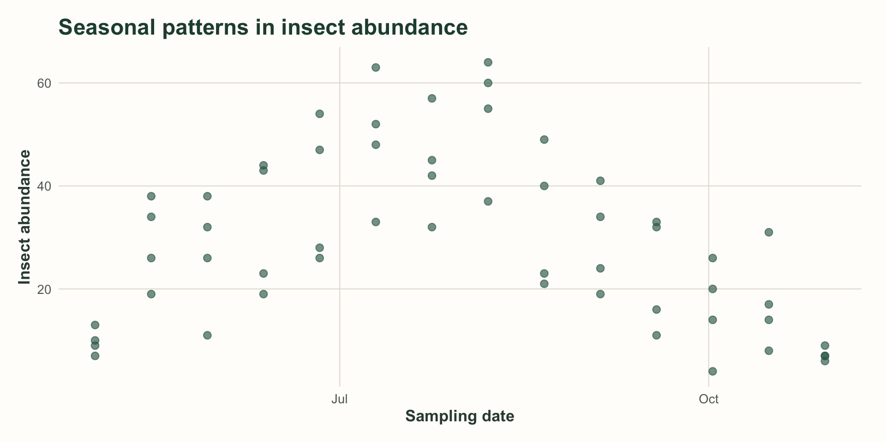
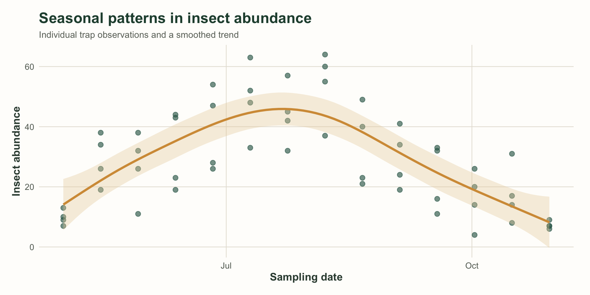
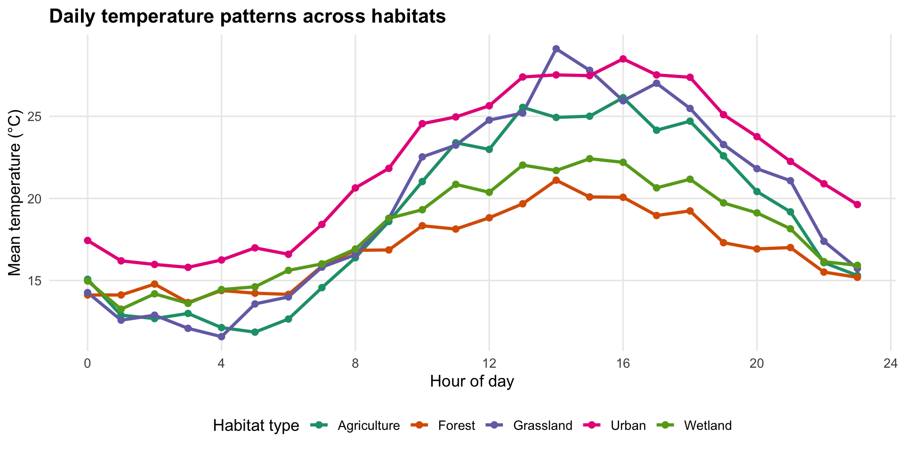
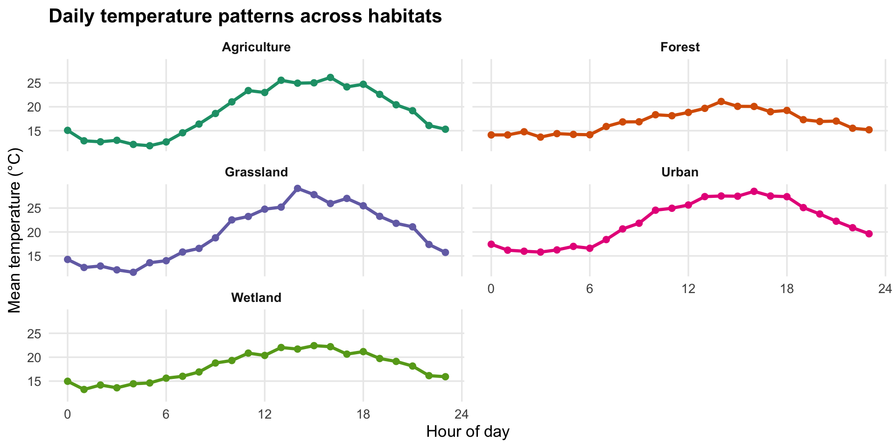

Week 7
Data Visualization Pt. I
This week: turning data into graphics
Data visualization is more than making a plot. A useful visualization should be:
- Truthful — represent the data accurately.
- Functional — make the important patterns interpretable.
- Beautiful — use thoughtful design to invite attention and communicate clearly.
Note
Style and substance: A visually appealing plot still needs analytical substance. A data-rich plot should also be something people can understand and want to look at: needs an emotional response, too!
🧰 The ggplot2 toolkit
Why ggplot2?
We’ll work primarily with ggplot2, part of the Tidyverse.
- Flexible tools for building a wide range of visualizations.
- Designed to work with tidy data.
- Plots are built by adding components together.
- Many other R packages return ggplot objects that we can further modify.
Tip
Base R can make useful plots, too. For this course, ggplot2 gives us a consistent and flexible framework for building and customizing graphics.
A ggplot plot is built from components

| Component | Purpose | Common functions |
|---|---|---|
| Data | Dataset being visualized | ggplot(data = ...) |
| Mapping | Connect variables to visual properties | aes() |
| Layers | Represent observations and summaries | geom_*() |
| Scales | Translate values into visual properties | scale_*() |
| Facets | Split data into panels | facet_wrap() |
| Coordinates | Control the coordinate system | coord_*() |
| Theme | Style non-data elements | theme_*() |
🎯 Mapping: connecting data to aesthetics
What does aes() do?
Aesthetic mappings connect variables in our dataset to visual properties of the plot.
| Aesthetic | What it controls | Example |
|---|---|---|
x, y |
Horizontal and vertical position | aes(x = temperature) |
color |
Color of points, lines, and outlines | aes(color = species) |
fill |
Interior color of shapes and polygons | aes(fill = habitat) |
size |
Size of points and text | aes(size = abundance) |
shape |
Point shape | aes(shape = species) |
alpha |
Transparency | aes(alpha = abundance) |
linetype |
Line style | aes(linetype = treatment) |
linewidth |
Line width | aes(linewidth = abundance) |
group |
Grouping for statistical/geometric operations | aes(group = site) |
label |
Text displayed in labels | aes(label = species) |
Global vs. layer-specific mappings
Global aesthetics are defined in ggplot() and inherited by layers.
Layer-specific aesthetics are defined inside an individual geom and apply only to that layer.
🧱 Layers: how data are drawn
Geometries are the visible building blocks
Layers determine how data are represented. We most often specify the geometry with a geom_*() function.
| Geom | What it displays | Typical use |
|---|---|---|
geom_point() |
Individual points | Scatterplots |
geom_line() |
Lines connecting observations | Time series, trends |
geom_path() |
Lines in data order | Movement paths |
geom_smooth() |
Fitted trend and interval | Relationships |
geom_bar() |
Counts in categories | Frequencies |
geom_col() |
Supplied values as bar heights | Summaries |
geom_histogram() |
Binned frequencies | Distributions |
geom_density() |
Smoothed distribution | Distributions |
geom_boxplot() |
Median, quartiles, outliers | Comparing distributions |
geom_violin() |
Distribution density by group | Comparing distributions |
geom_jitter() |
Points with positional variation | Reducing overlap |
geom_errorbar() / geom_ribbon() |
Uncertainty intervals/bands | Estimates and uncertainty |
geom_text() / geom_label() |
Text annotations | Labels |
geom_tile() |
Rectangular tiles | Heatmaps |
A layer can be more than a geom
A typical layer can include:
We can combine multiple layers to show different aspects of the same data.
Building a plot one layer at a time
Start with individual observations of insect abundance through the season.

Now add a smoothed seasonal trend:

Important
Layer order matters! Geoms are drawn in the order they are added. Later layers appear on top of earlier layers.
🎨 Scales: translating values into visual properties
Position scales and axes
Scales control how data values are translated into positions, colors, and other visible properties.
For numeric axes, common options include:
scale_x_continuous()andscale_y_continuous()— standard numeric scales.scale_x_reverse()— reverse an axis.scale_x_log10()— transform an axis to a log scale.
Useful scale arguments:
| Argument | Purpose |
|---|---|
limits |
Set the range of values shown |
transform |
Transform the scale (e.g., log, sqrt) |
breaks |
Set major tick positions |
minor_breaks |
Set minor tick positions |
n.breaks |
Suggest the number of breaks |
labels |
Customize tick labels |
Tip
Use ?scale_y_continuous() (or the corresponding scale function) to see the full set of arguments and examples.
Color scales: discrete, continuous, and binned
Choose a scale based on the type of variable being mapped.
- Discrete: categorical variables such as habitat, species, or treatment.
- Continuous: numeric variables such as temperature, elevation, or abundance.
- Binned: continuous values grouped into discrete intervals.
| Data / objective | Example scale functions |
|---|---|
| Categorical groups | scale_color_manual(), scale_fill_brewer() |
| Categorical, colorblind-friendly | scale_color_viridis_d() |
| Continuous numeric variable | scale_color_viridis_c() |
| Two-color gradient | scale_fill_gradient() |
| Gradient with midpoint | scale_fill_gradient2() |
| Multiple custom colors | scale_fill_gradientn() |
| Numeric values shown in intervals | scale_fill_steps() |
Tip
scale_fill_*() changes the interior fill of geoms; scale_color_*() changes point, line, text, and outline color.
Customize a color scale
Other useful arguments include palette, labels, limits, breaks, na.value, direction, and guide.
Tip
There are many additional palettes available in R. The paletteer package collects palettes from a wide range of packages: github.com/EmilHvitfeldt/r-color-palettes.
🏷️ Labels: make the plot understandable
Label the data and the visual encodings
Use labs() to add or modify plot text:
Common labels include:
title,subtitle, andcaptionxandyaxis titles- Names for mapped aesthetics such as
color,fill,shape, andsize tagfor a figure label
Tip
A good title and clear axis and legend labels help a reader understand the plot without needing to read your R code.
🪟 Facets: breaking up a plot
When groups become hard to compare
Plotting several groups together can make patterns difficult to distinguish. Here, we compare daily temperature patterns across five habitat types.

Use facet_wrap() to create separate panels
Faceting gives each subgroup its own panel—often making within-group patterns easier to see.

Facet scales: fixed or free?
fixed: x and y scales are the same in every panel.free_x: x varies; y is fixed.free_y: y varies; x is fixed.free: both x and y vary.
Important
Faceting variables must be discrete (categorical). To facet by a continuous variable, first create categories—for example, with cut_interval(), cut_width(), or cut_number().
📐 Coordinates & themes
Coordinate systems
The default ggplot coordinate system is Cartesian. A few other coordinate functions are useful:
| Function | What it does | Typical use |
|---|---|---|
coord_flip() |
Flips x and y axes | Horizontal bars or boxplots |
coord_fixed() |
Fixes the aspect ratio | Scatterplots and spatial data |
coord_equal() |
Uses equal x and y scaling | Spatial/geometric comparisons |
coord_polar() |
Converts Cartesian coordinates to polar | Circular plots |
We’ll return to coordinate systems in more detail when we work with maps.
Themes: the overall look and feel
Themes control non-data elements of a plot, including:
- Backgrounds and gridlines
- Text size, font, and color
- Axis lines, ticks, and labels
- Legend placement and appearance
- Plot margins
Some built-in themes:

Additional theme collections include ggthemes and hrbrthemes.
Tip
You can customize an existing theme with theme() or write a theme function and reuse it across multiple plots. Consistency helps your figures feel like they belong together.
Before you make your next plot…
Ask yourself:
- What pattern or comparison am I trying to communicate?
- Which variables should be mapped to position, color, shape, or size?
- Which geometry best represents the data/question I am trying to answer?
- Would facets make group patterns easier to see?
- Are the scales, labels, and theme helping—or distracting—from the message?